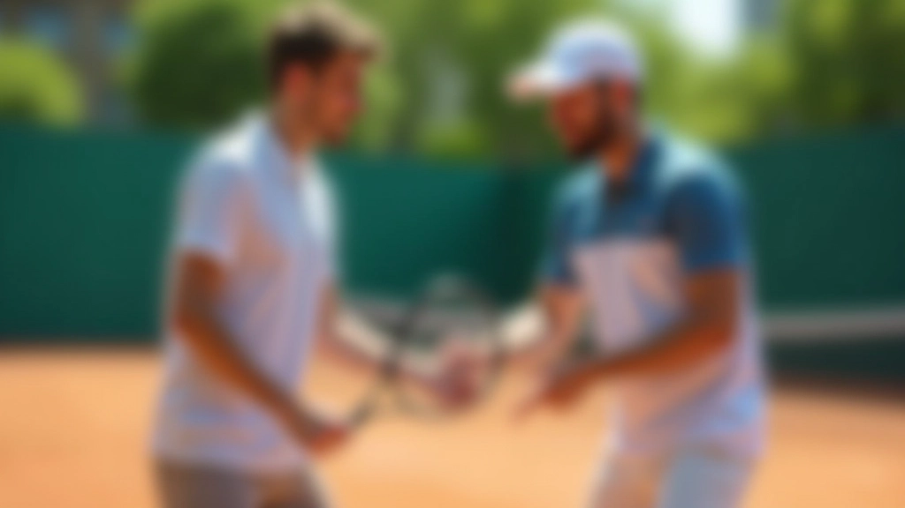
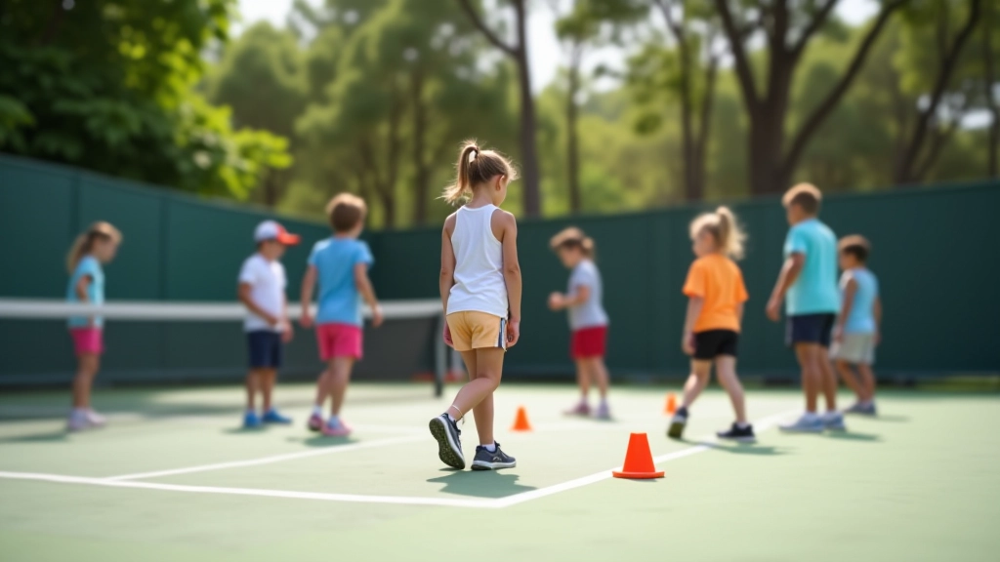

كيف تبدأ مسيرة طفلك في التنس
خطوات عملية لاختيار الأكاديمية المناسبة والتحضير الأساسي قبل البدء في التدريبات.
كيفية وضع أهداف واقعية لطفلك والتعامل مع التقدم والتحديات في رحلة التنس

عندما يبدأ طفلك رحلته في التنس، من الطبيعي أن تحلمي بأن يصبح بطلاً. لكن الفرق بين الأحلام الكبيرة والأهداف الواقعية هو ما يحدد نجاح الطفل فعلياً. الأهداف الواقعية ليست تقليل الطموحات — هي طريقة ذكية لبناء الثقة والمهارات خطوة بخطوة.
كل طفل يتطور بسرعة مختلفة. البعض يستغرق شهرين لإتقان الإرسال الأساسي، والآخر يحتاج إلى ستة أشهر. هذا طبيعي تماماً. عندما تضعين أهدافاً متوازنة، يبقى طفلك متحمساً ولا يشعر بالإحباط.
الأهداف الطويلة الأمد (مثل "أن يصبح لاعب تنس جيد") مهمة، لكنها بعيدة جداً. طفلك لن يشعر بالتقدم الآن. هنا يأتي دور الأهداف قصيرة الأمد — هي البنات الأساسية التي تبني الطريق نحو الحلم الأكبر.
خذي مثالاً: بدلاً من "أن يصبح محترفاً"، جزّئي الهدف إلى:
هذه الأهداف محددة وقابلة للقياس وممكنة التحقيق. طفلك يرى التقدم كل شهر، وهذا ما يحافظ على الحماس حياً.


التقدم في التنس ليس خطاً مستقيماً للأعلى. هناك أسابيع يبدو فيها أن طفلك تحسّن كثيراً، ثم يأتي أسبوع حيث يبدو أنه عاد للخلف. هذا ليس فشلاً — هذا طبيعي جداً.
العقل يحتاج وقتاً لتثبيت الحركات الجديدة. عندما يتعلم طفلك حركة جديدة، قد يفقد مؤقتاً بعض السيطرة على الحركات القديمة. لكن مع التكرار والممارسة، كل شيء يستقر معاً. الأسبوع السادس عادة ما يكون نقطة تحول حيث يبدأ الطفل يشعر بالثقة الحقيقية.
هذا هو السبب في عدم مقارنة تقدم طفلك بطفل آخر. كل واحد له جدول زمني خاص به. طفل قد يتعلم الضربة اليمنى بسرعة لكنه يحتاج وقتاً أطول للإرسال. هذا لا يعني أنه أبطأ — فقط أنه مختلف.
لا تتوقعي أن يصبح إرسال طفلك قوياً في أسبوعين. بدلاً من ذلك، ابحثي عن هذه العلامات:
هذه الأشياء أهم بكثير من عدد الكرات التي يحقق هدفاً في المرمى.

فريق المحتوى التحريري
كتبه فريق أكاديمية النيل للتنس التحريري، متخصص في توفير إرشادات عملية وموثوقة حول التسجيل والبرامج التدريبية.
نتائج التعلم والتطور تختلف من طفل لآخر. هذا الدليل يقدم معلومات تعليمية عامة بناءً على الممارسات الشائعة في تدريب التنس. لكل طفل احتياجاته الفريدة، وقد تختلف أوقات التقدم والمراحل عما هو موصوف هنا. استشيري مدربي طفلك دائماً للحصول على توصيات محددة لحالته.
الأهداف الواقعية ليست عن التخلي عن الأحلام الكبيرة. هي عن بناء جسر من الخطوات الصغيرة التي تقود إلى تلك الأحلام. عندما تضعين أهدافاً معقولة وتحتفلين بكل إنجاز صغير، طفلك يتعلم أن النجاح لا يأتي بين عشية وضحاها — يأتي من الالتزام والممارسة المستمرة.
اجلسي مع طفلك هذا الأسبوع وحددا معاً 3 أهداف صغيرة للشهر القادم. اكتبيها في دفتر. وفي نهاية الشهر، راجعيها معاً. هذه الممارسة البسيطة تعلم طفلك أن ينظر للمستقبل ويقيس تقدمه — مهارات ستساعده في التنس وفي الحياة.
هل تبحثين عن مزيد من الإرشادات حول بدء رحلة طفلك في التنس؟
اقرئي دليل البدء الكامل
خطوات عملية لاختيار الأكاديمية المناسبة والتحضير الأساسي قبل البدء في التدريبات.

دليل شامل لاختيار حجم ووزن المضرب الصحيح حسب عمر الطفل وقدرته البدنية.

معايير تقييم جودة الأكاديمية من المدربين والمرافق والبرامج التدريبية المقدمة.